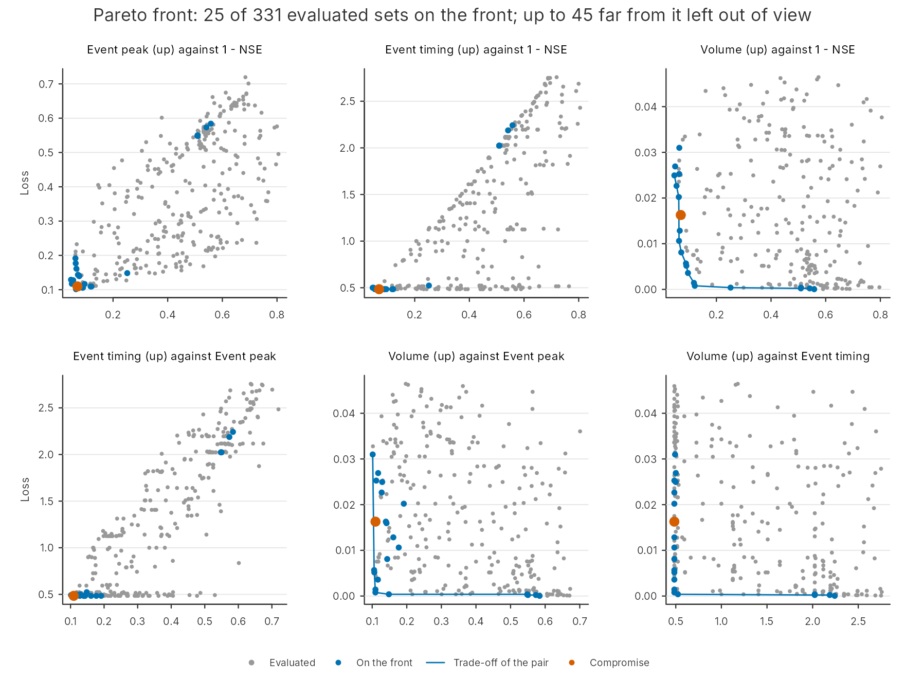
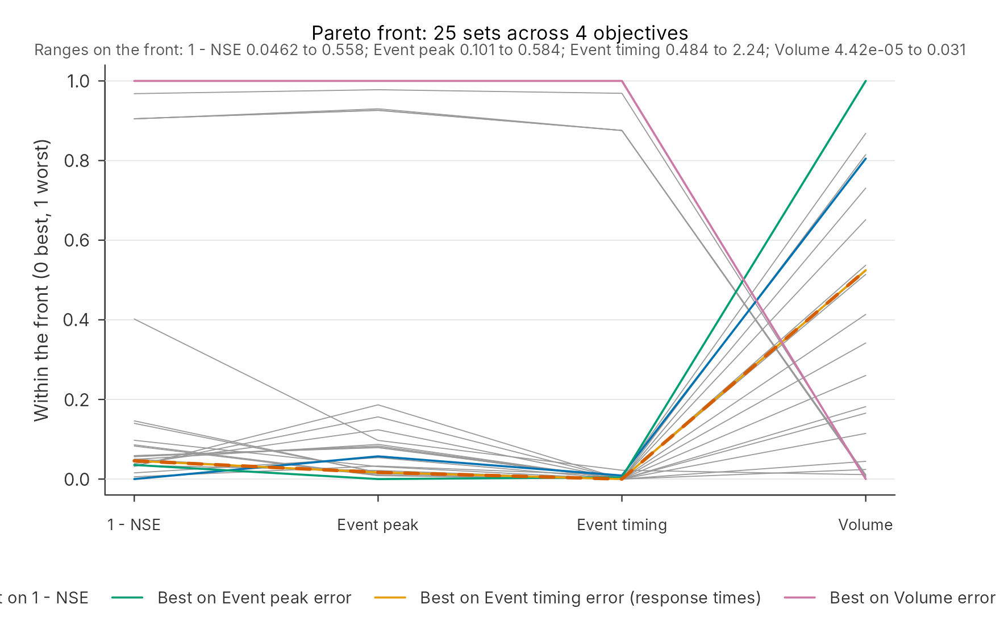
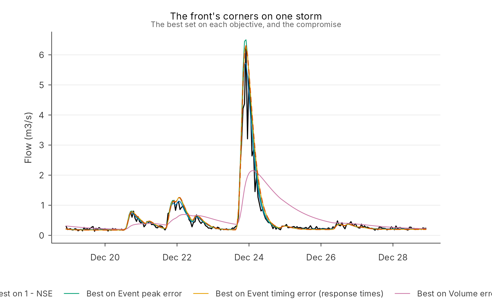
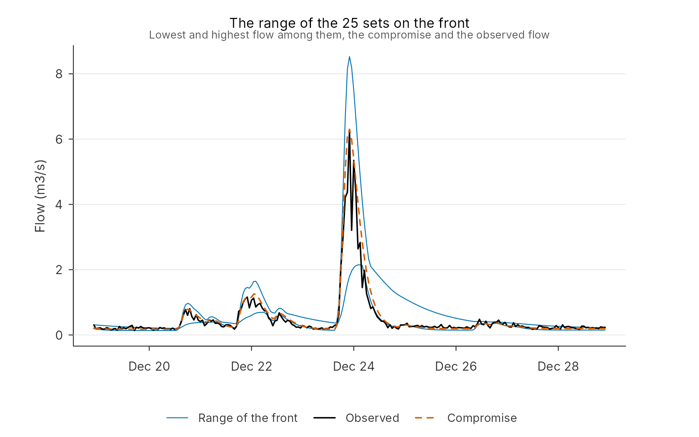
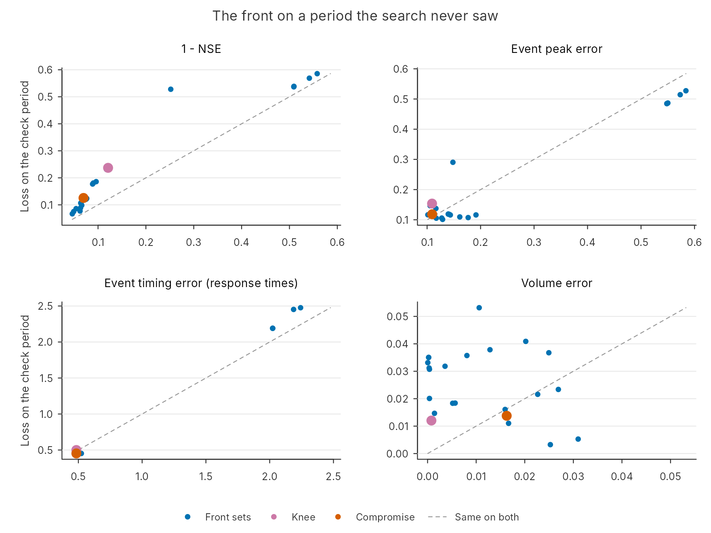

Trade-offs: calibrating to several objectives at once
pdmS7 documentation
Source:vignettes/trade-offs.Rmd
trade-offs.RmdA calibration that minimises one number makes a choice it does not show. Fit the whole record by NSE and the long recessions outweigh the floods. Fit the floods alone and the baseflow between them drifts. Blend the two with weights and you get one model, for one blend, with no sight of what a different blend would have given.
A Pareto front shows the choice instead of making it. It is the set of parameter sets that no other set beats on every objective at once. Along the front, each gain on one objective costs something on another; off it, a set is simply worse than one on it. The modeller then picks from the front with the trade-off in view, and says why.
This article fits a front, reads it in three plots, picks a model from it, and logs the choice.
Calibrating on the events alone
First, the simpler question: can the PDM be calibrated on event
scores only? Yes: objective = "events" in
calibrate_pdm() scores only the windows round the floods,
by pooled event NSE, peak error and timing error. But the event windows
say little about the slow stores, recharge and the year’s volume, so a
fit on events alone can get the peaks right while the baseflow wanders.
The safer use is the last stage of a staged calibration, which refits
only the fast response on the largest events after the earlier stages
have fixed the volume and the recessions:
stages <- pdm_stages(config, events = TRUE, event_share = "0.5QMED")
fit <- calibrate_staged(config, forcing, observed, stages = stages, warmup = warmup)A front goes further: it fits the events and the whole record side by side, and shows how far they pull apart.
A record with a known answer
A made-up catchment, so the answer is known: two years of synthetic rain through the standard PDM, with 15% noise on the flow, as a gauge would add. The search starts with the soil store too large and its shape and the fast store’s time constant unknown.
rain <- synthetic_rain("2021-01-01", years = 2, dt = 1, seed = 2)
truth <- modifyList(pdm_presets("standard"), list(area_km2 = 20))
flow <- run_pdm(pdm_from_config(truth), rain[c("rain", "pet")])$output$q_m3s
set.seed(4)
observed <- flow * exp(rnorm(length(flow), 0, 0.15))
start <- truth
start$distribution$cmax <- 200
lower <- c(distribution.cmax = 80, surface.k1 = 2, distribution.b = 0.1)
upper <- c(distribution.cmax = 400, surface.k1 = 40, distribution.b = 2)Fitting the front
Four objectives, all losses to be minimised: nse_loss (1
- NSE, over the whole record), event_peak_error and
event_timing_error (over the largest half of the events),
and abs_bias (the volume error). The last six months are
held out of the search, as a check period: the front will be scored on
them later.
check <- seq.int(nrow(rain) - 24 * 182, nrow(rain))
searched <- observed
searched[check] <- NA
front <- calibrate_pdm_multi(
start, rain[c("time", "rain", "pet")], searched, lower, upper,
objectives = c("nse_loss", "event_peak_error", "event_timing_error", "abs_bias"),
n_samples = 30, starts = 2, control = list(maxit = 150), warmup = 24 * 60, seed = 1
)
front
#> Pareto front: 25 of 331 evaluated parameter sets, PA-DDS, 0 failed
#> Event losses over the 64 largest of 127 events (28 screened out)
#> nse_loss 0.04621 to 0.5579 on the front
#> event_peak_error 0.1014 to 0.5839 on the front
#> event_timing_error 0.4844 to 2.242 on the front
#> abs_bias 4.417e-05 to 0.03099 on the frontThe search starts with 30 random sets. Then two chains of Pareto-archived dynamically dimensioned search (PA-DDS) grow the front from them, 150 model runs each. A chain keeps the sets that no other set it has seen beats on every objective. At each step it nudges one of them, at first in many parameters at once and later in few, and keeps the result if nothing beats it. It nudges sets in the sparse parts of the front more often, so the front fills in evenly. Every set tried is kept, and the front is drawn from all of them. It is still a sampled front: a longer search or another seed may find a little more of it.
Each trial starts as calibrate_pdm() starts it, in
steady state at the first observed flow, so the front and a
single-objective calibration of the same record are comparable. With
cores = 2 the two chains run side by side, with the same
answer.
The older way, minimising weighted sums of the objectives
(method = "dds" and others), finds only the parts of a
front that bulge towards the origin. Where the front has a hollow, every
weighting lands on one side of it or the other, and the sets in the
hollow, often the useful middle ground, are never found. PA-DDS has no
weights, so it has no such blind spot.
Reading the front
Each pair
plot(front)
Each panel sets one objective against another. Grey points are every set tried; blue points are on the front of all four objectives; the blue line is the trade-off of that pair alone, and the orange point the compromise (the best set with all four equally weighted). A front that bends sharply means a gain on one objective costs little on the other until the bend, and a lot after it. A flat line means no trade-off between that pair.
All the objectives at once
plot(front, "parallel")
One line per set on the front, across the four objectives, each axis running from the front’s best (0) to its worst (1). Lines that cross between two axes mark a trade-off; lines that run together mark objectives that agree. The subtitle gives each axis’s real range, which matters: an axis whose range is small magnifies a small difference.
What the numbers mean on a storm
plot(front, "flows", forcing = rain, observed = observed)
The largest flood of the record, as the best set on each objective and the compromise see it. A number like half a response time means little until it is drawn.
How much the choice matters
plot(front, "band", forcing = rain, observed = observed)
The blue lines are the lowest and highest flow among all the sets on the front, hour by hour. Every one of those sets is defensible by some balance of the objectives, so the width of the band is how much the flood depends on that choice. It is a band of plausible calibrations, not a confidence interval: it says nothing about errors in the rain or the rating.
Here the band is wide because it includes the front’s ends: on the
largest flood one set overshoots the peak by a third and another misses
two thirds of it, each because it is the best on some objective that
does not care about peak size. Nobody would choose those sets for a
flood model. pareto_band(front, rain, sets = ...) gives the
band of the sets you would actually consider, such as those round the
knee, which is much narrower.
Does the trade-off hold?
The front was fitted on the first eighteen months.
pareto_validate() scores every set on its front on the six
months held out, by the same losses.
front <- pareto_validate(front, rain, observed, check)
plot(front, "validation")
Each panel is one objective: a set’s loss on the calibration rows across, on the check period up. Sets near the dashed line keep their quality on data the search never saw; sets well above it were good on the calibration rows only. A front whose order holds on the check period is a front whose trade-offs are real.
Here the order holds for 1 - NSE, event peaks and event timing: sets good on calibration stay good. It does not hold for the volume error, which scatters: differences of a per cent or two in volume on the calibration rows say little about the next six months. That is worth knowing before paying for a small volume gain with anything else.
Choosing
pareto_choose() takes one set from the front: the best
on one objective, the best under weights of your own, the knee, or the
compromise.
knee <- pareto_choose(front, knee = TRUE)
knee$scores[, c("distribution.cmax", "surface.k1", "distribution.b", "loss_nse_loss",
"loss_event_peak_error", "loss_abs_bias")]
#> distribution.cmax surface.k1 distribution.b loss_nse_loss
#> <num> <num> <num> <num>
#> 1: 333.3256 3.136643 0.9071088 0.1210064
#> loss_event_peak_error loss_abs_bias
#> <num> <num>
#> 1: 0.1092899 0.0007876625
peaks <- pareto_choose(front, objective = "event_peak_error")
flood_weighted <- pareto_choose(front, weights = c(nse_loss = 1, event_peak_error = 2))The knee is where the trade-off turns sharpest. Put each objective on the front’s own scale, 0 for its best and 1 for its worst, and take the set with the lowest total. With two objectives that is exactly the set furthest below the straight line joining the two ends of the front. It needs no weights, which makes it the natural rule for many catchments at once; but it depends on which sets made the front’s ends, so look at the plot before trusting it.
The truth is cmax 300 mm, b 0.4 and
k1 2 h. The knee is not the truth, and need not be: with
noise on the flow and four objectives pulling different ways, the knee
is the best balance of fit, not the best guess of the parameters. Note
too that the truth’s k1 sits on the lower bound of the
search; a value that lands on a bound may be held there by the bound,
not by the data, so widen the bounds before trusting it.
In a calibration project
log_pareto_calibration() runs the search on the
registered calibration window, from the project’s own start, and logs
the chosen set as an automatic calibration. The entry keeps the whole
front, every set’s parameters and losses, so the report draws the front
beside the chosen model and anyone reading the log later sees the
trade-off behind the choice. check_share cuts a check
period from the end of the calibration window; the registered validation
window is never touched, so it still judges a model chosen without
it.
log_pareto_calibration(
project, parent = "0003", lower = lower, upper = upper,
objectives = c("nse_loss", "event_nse_loss", "event_peak_error", "abs_bias"),
choose = "knee", check_share = 0.25,
reasoning = "Flood warning: see what event fit costs the whole record, take the knee"
)As a stage. A staged calibration can end with a
front instead of one more single fit:
pdm_stages(config, pareto = c("nse_loss", "event_nse_loss", "abs_bias"))
adds a trade-off stage after the others. It searches only the fast
response and the time delay, with the slow stores already fixed by the
earlier stages, so a modest budget covers the front, and it keeps the
knee unless pareto_choose says otherwise.
In the app. The Trade-offs tab searches and logs a front, draws any pair of its objectives, and shows the flow and scores of whichever set you click, beside the logged one. If you prefer another set, keep it as a trial and carry on from there; the log records why.
The chosen model then goes on like any other: propose it as the candidate, validate it, and test it on the held-back years.
Cautions
-
Scales matter only for weights and the compromise.
scalesdivides each loss first, so that a weight of 1 means the same on each; set them to a loss you would call small, such as 0.05 for a volume error and 0.1 for 1 - NSE. PA-DDS and the knee need none. - The front is a sample. Run a second seed; if its front lies on top of the first, the search has covered it.
- The front is fitted on the calibration window. Check it on a period it never saw before choosing from it.